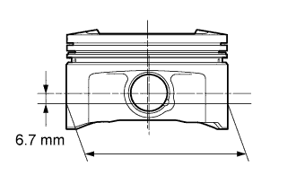
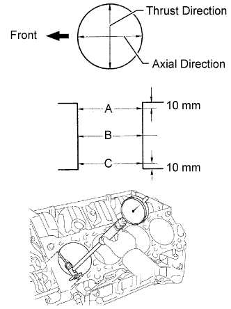

CYLINDER BLOCK > REPAIR |
| 1. BORE CYLINDER |
Prepare 4 new O/S pistons.
 |
Using a micrometer, measure the piston diameter at a position that is 6.7 mm (0.264 in.) downward from the center of the piston pin hole.
Calculate the amount each cylinder is to be rebored as follows.
Bore and hone the cylinders to the calculated dimensions.
Using a cylinder gauge, measure the cylinder bore diameter and calculate the honing allowance.
Finish the cylinder bore using the calculated value.
 |
Using a cylinder gauge, measure the cylinder bore diameter.
| Position | Specified Condition |
| A | 10 mm (0.394 in.) from top edge |
| B | Center |
| C | 10 mm (0.394 in.) from bottom edge |